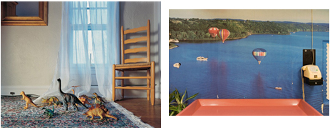

past exhibition | ||
Aperture Foundation’s Limited-Edition Contemporary Prints ExhibitionMay 11–September 7, 2011 Opening Reception: Wednesday, June 29, 6-8pm Artists in the exhibition include: Michel Campeau, Maureen Drennan, Doug DuBois, JH Engström, Todd Hido, Kalle Kataila, Mark Lyon, Edgar Martins, and Bas Princen. |
 The Wild Project is pleased to present an exhibition of limited-edition prints produced by Aperture Foundation. Aperture Foundation is a leading photography non-profit dedicated to promoting photography in all its forms based in Chelsea. The exhibition focuses on contemporary artists whose work, in many cases, has been featured in Aperture Magazine, Aperture books, in exhibitions at Aperture Gallery or have been winners of the Portfolio Prize contest. Aperture Foundation is proud to have one of the longest running limited-edition print and portfolio programs in the United States. The print program started in the 1960’s with collaborations between the master photographers Paul Strand and later with Edward Steichen. The print program expanded over the years to offer richly diverse editions and portfolios to art lovers and collectors. Today the program works with several artists’ estates and presents prints that range from masters of the medium, to established contemporary artists and finally highlights many emerging artists of tomorrow. Proceeds from the sales benefit the artists and helps maintain the quality of Aperture’s publications and public programming. The print program supports the organization’s non-profit mission to advance photography in all its forms. | |
exhibition archive |
|||
| 2016 | 2015 | 2014 | 2013 |
| 2011 | 2010 | 2009 | 2008 |